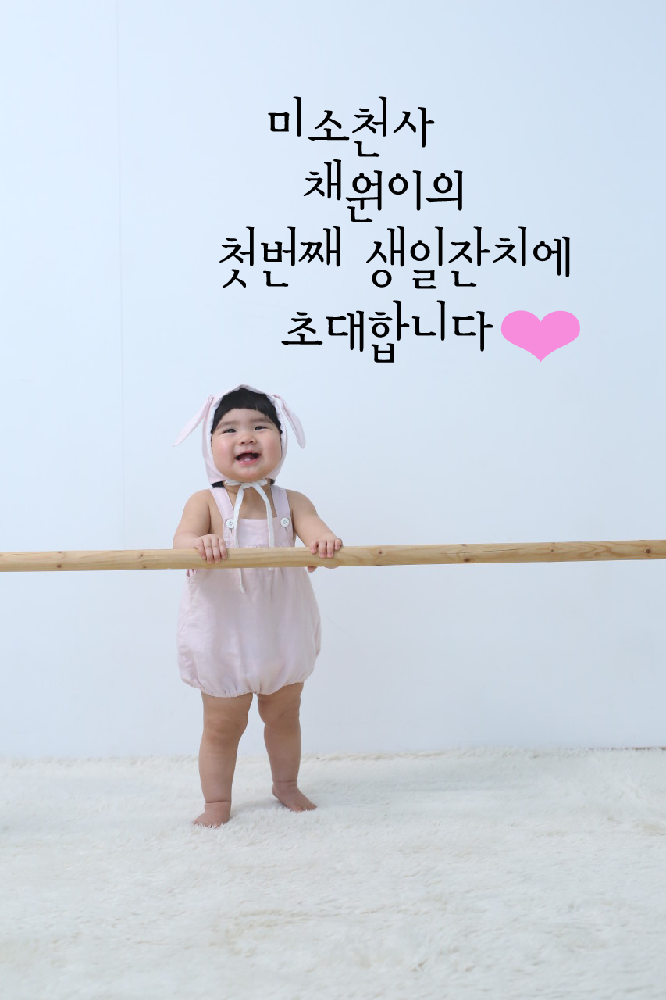

Creating a Photo Gallery Layout
This page shows how to make a photo gallery using Pure Grids. Using Pure, we can create interesting layouts such as this photo gallery. This layout is fully responsive. We've added a bit of custom media queries on top of the responsive grid provided by Pure.
We've also taken advantage of
Pure Forms and
Pure Menus. This example uses a form with the
pure-form class name to create an inline form. We use
Pure Buttons for the button styling.